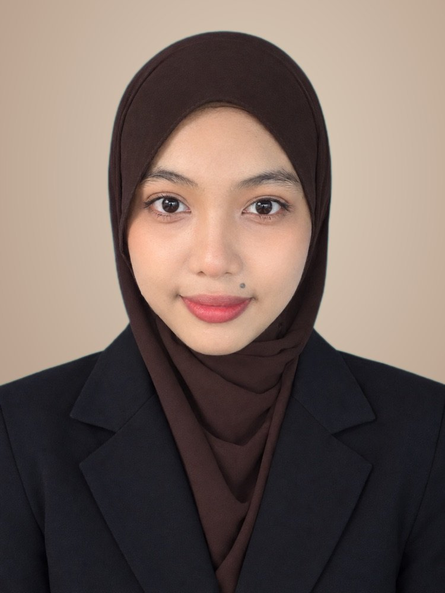
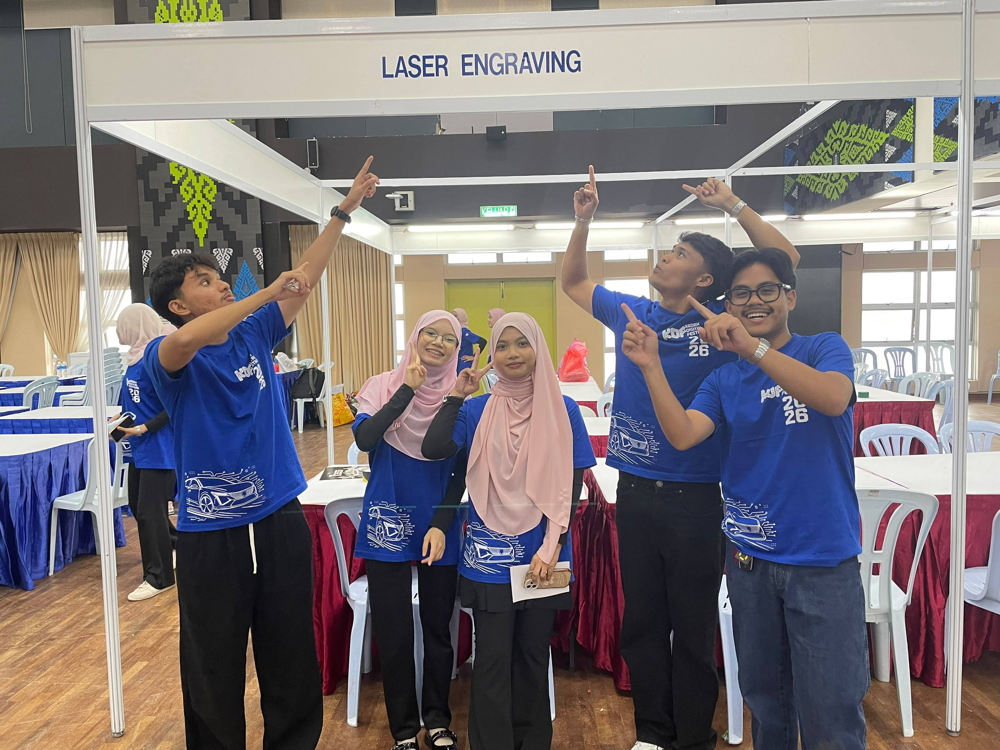

Orlin.
Intelligent systems developer with a multimedia eye building models, IoT and web systems, then telling their story well.
I'm Wan Orlin Balqis, an Information Systems student at UiTM. I teach myself whatever a project needs, which has brought me Dean's Awards and the chance to lead other students. I'm looking for an internship where I can keep growing and give my best.

01 — About
Technology is better when someone explains it well.
I study computing at UiTM Kedah and spend my time outside class on community programmes. At SULAM events I guide school students through hands-on technology, and in student clubs I lead multimedia work, from posters to social media.
That mix building systems, teaching them, and presenting them is what I want to bring to an internship team.
02 — Selected work
Course & industry projects
Projects from my subjects and industrial training at UiTM. Open any project for the full write-up, tools and gallery.
03 — Expertise
Tools I work with
Languages, platforms and creative software I use across my studies, projects and events.
04 — Experience
Leading, teaching & documenting.
Committee work and volunteering across logistics, publicity and event operations, from university clubs to state-level digital festivals.

Roles
Programmes & events
05 — Recognition
Awards & certificates
Select any entry to view the certificate in full.